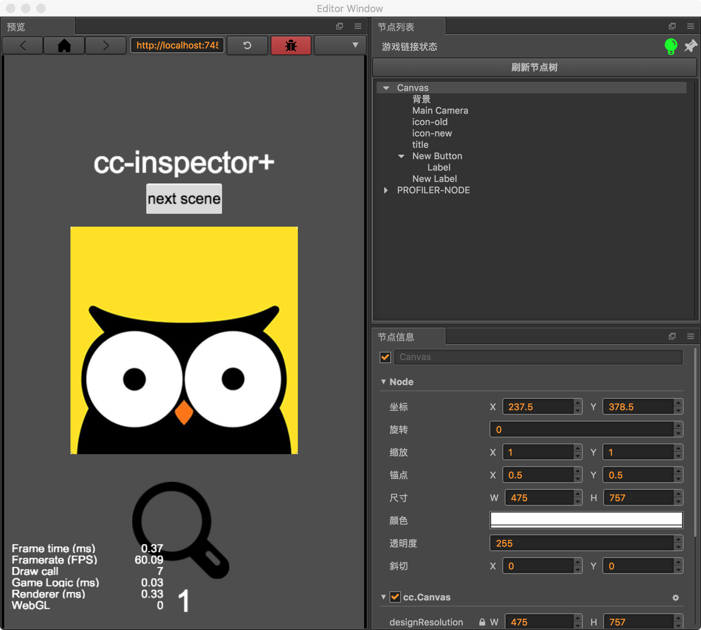

插件说明
运行时查看节点信息
最低Creator版本要求
1.8及其以上版本
在低版本的Creator中,因为使用的node的版本不一致,导致插件的async语法无法被正确解析,因此插件目前只能选择放弃兼容更低版本,如果需求,请私聊作者,开发定制版本
插件截图
菜单位置: 菜单=>cc-inspector
依次打开窗口,并调整为自己喜欢的布局

插件使用答疑视频
里面详细解释了一些插件技术细节,以及大家使用过程中遇到的一些常见问题
https://www.bilibili.com/video/av41160379/
开源地址
暂不开源
购买地址
- 第1种方式(推荐)
- 下载安装,打开cocos creator 软件
- 在软件的菜单栏点击 扩展 => 插件商店
- 在付费排行榜里面即可看到该插件,按照提示,自行购买.

- 第2种方式
- 网页链接: http://store.cocos.com/stuff/show/178979.html ,打开后按照提示进行购买